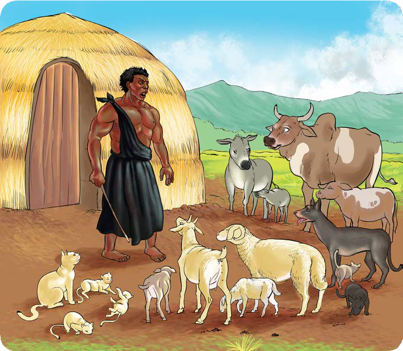

Ufahamu
Soma hadithi ifuatayo, kisha jibu maswali yanayofuata.
Kisa cha wanyama kuishi na binadamu
Msimuliaji: Paukwa Wasikilizaji: Pakawa Msimuliaji: Ngoja nikueleze kilichotokea mahali ambapo hata upepo ulikuwa ukizungumza. Hapo zamani za kale, wanyama wooote waliishi porini. Walikuwa wakishirikiana kutafuta chakula. Simba alikuwa anashirikiana na ng’ombe, mbuzi, kondoo, mbwa, paka na punda. Walikuwa marafiki wa karibu sana. Waliishi kama ndugu wa kuzaliwa.
Walikubaliana kutafuta chakula kwa zamu, huku wengine wakibaki nyumbani kuwahudumia watoto wao. Chakula kilikuwa kinapatikana kwa shida sana. Ilifika zamu ya simba kwenda kutafuta chakula. Aliwaaga wenzake na kuondoka kwenda porini. Huku nyuma, ng’ombe aliwashawishi wenzake kwa kusema, “Jamani, ninaona maisha ya huku porini yanazidi kuwa magumu siku hadi siku. Tuondokeni twende tukaishi kwa binadamu.” Mbwa akauliza, “Hawa watoto wa simba tutawafanyaje?” Ng’ombe akajibu, “Tuwatoroke.”
Wote walikubali. Ng’ombe akawaambia, “Mkisikia sauti yangu moo moo moo, kila mmoja akimbie na watoto wake.” Watoto wa simba watakuwa wamelala. Baada ya muda mfupi, ng’ombe alifanya hivyo, na wanyama wote wakakimbia. Simba aliporudi kutoka mawindoni, hakuwakuta wenzake. Akashituka alipowaona wanawe wamebaki peke yao. Akapiga ukelele wa majonzi “Mamaaa! Uuuwi! Watoto wangu watacheza na nani?” Alitazama huku na kule lakini hakuona rafiki yake hata mmoja. Alilia sana kwa uchungu. Aliendelea kuwatafuta lakini
hakufanikiwa kuwaona. Ng’ombe na wenzake, wakiwa njiani kuelekea kwa binadamu, walianza kuzungumza. Paka alisema, “Tutafanya nini ili binadamu aweze kutukaribisha nyumbani kwake?”
Punda akasema, “Kila mmoja aeleze atamsaidia nini binadamu.” Ng’ombe akasema, “Mimi nitamwambia binadamu kwamba nitampatia maziwa na siagi. Pia, nitamsaidia kulima mashamba na kumpatia samadi.”
Punda akasema, “Mimi nitamsaidia kubeba mizigo na kulima mashamba kwa jembe la kukokota.”
Mbwa akasema, “Mimi nitamlindia nyumba mchana na usiku.” Pia, nitalinda mashamba yake dhidi ya wanyama waharibifu. Nitakula chakula kidogo anachokula yeye.”
Paka akasema, “Mimi nitamwambia binadamu kwamba nitalinda mazao yake dhidi ya panya wanaoharibu mazao. Nitalala kwenye ghala la kuhifadhia mazao. Nitakula baadhi ya vyakula anavyokula yeye.”
Kondoo na mbuzi wao walisema, “Sisi tutamwambia binadamu kwamba tutampatia maziwa. Chakula chetu ni majani. Atatujengea zizi moja.”
Baada ya mazungumzo hayo, usiku uliingia. Walikuwa wamechoka; wakalala pangoni. Alfajiri waliendelea na safari yao ya kwenda kwa binadamu. Binadamu alipowaona, alishtuka na kuogopa. Akasema, “Ondokeni! Ondokeni ninyi wanyama.” Wanyama wakambembeleza wakiomba awasikilize kwanza.

Aliendelea kwa kuwauliza “Mnataka niwasaidie nini?” Ng’ombe akajibu, “Sisi tunaomba tuishi na wewe. Tumechoka maisha ya porini. Unavyotuona hapa, tunahitaji msaada wako.” Aliuliza tena, “Mtanisaidia nini endapo mtaishi na mimi?” Walijieleza kama walivyojadiliana wakiwa njiani.
Baada ya kusikia maelezo ya kila mnyama, akawauliza tena, “Je, hamtanidhuru?” Wakajibu, “Hapana! Hatutakudhuru. Tutakuwa watiifu siku zote.” Binadamu akawakubalia. Akasema, “Nimesikia maelezo ya kila mmoja wenu. Hivyo, kuanzia sasa, tutaishi pamoja. Kila mnyama atekeleze kile alichoahidi kukifanya bila manung’uniko.” Wote walifurahi kuanza kuishi na binadamu. Mpaka sasa, wanyama hao wanaishi na binadamu. Walikubaliana wasiwe wanaongea kabisa ila wawe wanatoa mlio wanapokuwa na tatizo.